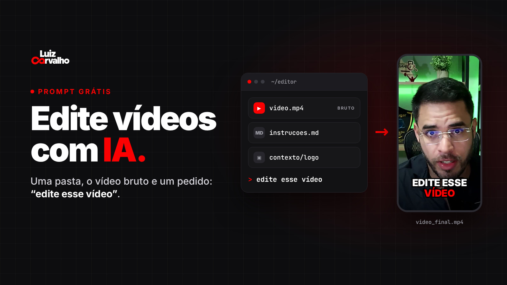

Como editar vídeos com IA usando só um prompt?
Você edita vídeos com IA usando uma pasta e um arquivo de instruções. Primeiro, crie uma pasta e coloque nela o vídeo bruto, do jeito que você gravou. Em seguida, salve na mesma pasta o prompt deste post, que funciona como as instruções do projeto. Se quiser, crie também uma pasta contexto com a sua logo, a fonte e as cores. Depois, abra uma ferramenta de IA que trabalha com arquivos. Por exemplo, o Claude Code, o Codex do ChatGPT ou o Antigravity, do Google. Por fim, selecione a pasta e peça: edite esse vídeo. A IA transcreve a fala e corta silêncios, erros e regravações. Além disso, ela coloca legendas animadas, com a palavra falada no momento na cor da sua marca. O vídeo final sai na vertical, em 1080 por 1920. Antes de entregar, a própria IA confere se a legenda está sincronizada com a fala.
Antes de usar o Claude Code, eu levava quase uma hora para editar um vídeo. Hoje, todos os meus vídeos são editados 100% com IA.
Por isso, resolvi ensinar o passo a passo de graça e entregar o prompt que eu uso. Você copia o arquivo inteiro logo abaixo.
O que o prompt de edição de vídeo faz?
O prompt de edição de vídeo é um arquivo de instruções, em inglês, que transforma a IA em editora de vídeos falados. Ele descreve a pasta de trabalho, a identidade visual e uma rotina de sete etapas. Primeiro, a IA lê a pasta contexto e analisa o vídeo. Em seguida, transcreve a fala por trechos, com o tempo de cada palavra. Assim, ela decide o que cortar: regravações, frases abandonadas, ruídos e legendas falsas inventadas pelo reconhecimento de voz. Depois, monta as legendas em blocos de duas a quatro palavras, com animação de entrada. O render final sai em 1080 por 1920, com o volume normalizado. Por fim, a IA revisa o próprio trabalho e mede a diferença entre legenda e fala. O arquivo não traz programas prontos. Por isso, a própria IA escreve os scripts que precisa e reaproveita esses scripts no vídeo seguinte.
Passo a passo: da pasta ao vídeo editado
- Crie uma pasta. Eu chamei a minha de
editor, mas pode ser qualquer nome. Dentro dela, coloque o vídeo bruto, sem nenhuma edição. - Coloque o arquivo de instruções. É o prompt deste post. Salve o texto
inteiro num arquivo dentro da pasta. No vídeo, eu chamei de
instrucoes.md. - Crie a pasta
contexto(opcional). Ela guarda a sua identidade visual: logo, fonte, cores, o que precisar. Eu coloquei só a minha logo. - Abra a sua ferramenta de IA. Pode ser o Claude Code ou o Codex, do ChatGPT. No vídeo, eu usei o Antigravity, do Google.
- Peça a edição. Abra um novo projeto, selecione a pasta e escreva:
Edite esse vídeo.
A estrutura final fica assim: o vídeo bruto e o arquivo de instruções na raiz, mais a pasta
contexto. Depois da edição, a IA cria a pasta out com o vídeo pronto e
a pasta scripts com as ferramentas que ela mesma escreveu.
A cor da legenda sai da sua logo
Eu não informei nenhuma cor. Mesmo assim, a palavra ativa da legenda saiu no vermelho da minha marca. Isso acontece porque o prompt manda a IA tirar a cor de destaque da logo. Ou seja, ela ignora branco, preto e cinza e usa a cor mais forte que sobrar.
Sobre o nome do arquivo
O prompt foi escrito como um CLAUDE.md, o arquivo que o Claude Code lê sozinho ao
abrir uma pasta. Portanto, se você usa o Claude Code, salve com esse nome. Com outro nome,
como o instrucoes.md do vídeo, peça para a IA ler o arquivo antes de editar.
O prompt: copie o arquivo inteiro
O texto está em inglês de propósito, e você não precisa traduzir. Além disso, ele funciona igual para vídeos em português. Copie o bloco inteiro e salve dentro da pasta do vídeo.
# CLAUDE.md
This file provides guidance to Claude Code (claude.ai/code) when working in this folder.
## What this folder is
A workspace for editing recorded talking-head videos into finished vertical videos (Reels, Shorts, TikTok). Editing means cutting silences, mistakes and retakes, then burning in animated captions in the owner's visual identity. **This folder only edits and applies design.** It doesn't write post captions, it doesn't make thumbnails, and it never publishes anything.
There is no ready-made tooling. Write whatever scripts you need to meet the requirements below, keep them in `scripts/`, and reuse and improve them from one video to the next.
- **Root:** raw recordings waiting to be edited. Don't rename, move or re-encode them. Filenames often have spaces, so always quote paths.
- **`contexto/`:** the owner's identity and references (see the next section). Read it before every edit.
- **`scripts/`:** your own tooling.
- **`out/<slug>/`:** everything generated, one folder per video. `work/` holds intermediates (transcript, cut decisions, captions, contact sheets), and the result is `video_final.mp4`. Never write generated files next to the raw videos.
## The `contexto/` folder
This folder is what makes the edit belong to its owner. Everything in it is a reference, and all of it is optional:
| Item | Used for |
| --- | --- |
| `logo.svg` / `logo.png` | The **source of the brand colours**. The accent (active-word) colour is the logo's strongest non-neutral colour. An overlay or title may also use the logo. |
| `contexto.md` | Free-form notes that override anything here, in plain language: who appears in the videos, brand colours as hex, the caption font, the language, the comment-CTA keyword, a glossary of names and terms Whisper gets wrong, the caption position, things to always or never do. |
| `fonts/` | `.ttf`/`.otf` files for the captions. Use them instead of system fonts. |
| Images or videos | Style references, such as an earlier edit they liked or a screenshot of the caption look. Look at them and match them. |
**Precedence:**
1. what the person says in the conversation;
2. `contexto.md`;
3. what you derive from the logo and the references;
4. the defaults in this file.
**Deriving the accent from the logo:**
- Rasterise the logo if it's an SVG.
- Ignore near-white, near-black and grey pixels, and take the dominant remaining colour.
- If the logo has no colour (pure black and white) or there's no logo, use the default accent `#FFD400`.
- The accent must read against a white text block with a black outline. If it's very dark or very light, pick the next brand colour or the default.
**If `contexto/` is missing or empty:** apply the defaults, edit anyway, and say in the report which defaults were used. Offer to create `contexto/contexto.md` from what you learned in the video, such as the person's name or recurring terms.
**When something is learned:** a correction the person makes, or a term Whisper keeps getting wrong, is worth adding to `contexto/contexto.md`. Ask first, then add it, so the next edit gets it right.
## Standard routine for any video dropped here
Every video file (`.mp4`, `.mov`, `.m4v`) in the root with no `out/<slug>/video_final.mp4` is waiting to be edited. When the person says "edit the video" or just drops a file, take the newest unprocessed one. If there are several, list them and do them one at a time. Apply the defaults without asking.
1. **Read `contexto/`:** notes, logo colours, fonts, references.
2. **Identify the video.**
- **Slug:** the filename lowercased, accents stripped, every run of non-alphanumerics turned into one `-`. For example, `My Video 01.mp4` → `my-video-01`. If `out/<slug>/` already belongs to a different video, append `-2`.
- **Probe** the resolution, frame rate and duration.
- **Format:** the output is vertical 1080x1920. If the input is vertical at another resolution, scale it. If it's horizontal or square, stop and ask how to reframe it (crop to the face, or blurred bars).
- **Contact sheet:** make one of the original with timestamps and look at it.
- **Layout:** decide whether the video is face-only or split-screen (screen or content on top, face below). Note when the screen changes, because a long silence may be the moment a result appears.
3. **Transcribe, then decide what goes** (see "Cutting").
4. **Assemble and caption** (see "Captions").
5. **Render:** a quick preview first, then the final render in the background (see "Render").
6. **Review** (see "Review"). Don't deliver a video that fails any check: fix it and re-render.
7. **Report and stop.** End with:
- a table of what was cut (original time, text, reason);
- original vs final duration;
- the sync numbers;
- which `contexto/` items were used, or which defaults;
- the path to `video_final.mp4`;
- a reminder that you can't hear the audio, so the person should listen to the splices.
## Cutting
**Transcription.** Use faster-whisper large-v3, with word timestamps.
- **Language:** the one in `contexto.md`, or detect it on the first island and keep it fixed for the whole video.
- **Speech islands:** first split the audio into islands on silences (around −42 dB, 0.35 s). Transcribe each island separately, with a small margin on each side. A single pass over the whole video merges retakes and hides repetitions.
- **Glossary:** if `contexto.md` has one, pass its terms as the initial prompt (hotwords) to bias recognition.
- **What to keep:** each word's start, end and confidence, so you can read the transcript island by island with pauses and low-confidence words marked.
**Deciding what goes** is a reading task. Read every island and record each decision with a reason. Cut:
- **Retakes:** the same sentence or idea said twice. Keep the last complete take. Signs: identical openings, and short islands followed by a long pause.
- **Abandoned sentences:** an island that stops mid-sentence and is picked up later.
- **Whisper hallucinations:** short islands over silence turn into subtitle credits and sign-offs ("Legenda por…", "Thanks for watching", "Obrigado", "Tchau, tchau."). They aren't speech: cut them as silence and never caption them.
- **Noise** before the first word and after the sign-off.
- **Spoken instructions to the editor.** These aren't content. "Don't use what I said before, start from here" means cut everything it refers to, plus the instruction itself.
- **On split-screen videos:** after a cut, the next sentence still has to make sense with what is on screen.
**Fine pauses** are cut mechanically, with a more sensitive pass (around −35 dB, 0.22 s):
- Cut every pause of 0.3 s or more.
- Keep about 0.08 s before and 0.12 s after each speech chunk, so syllables aren't clipped.
- **Snap every cut to a frame boundary.** Otherwise the audio drifts from the picture at each splice.
- Put a ~12 ms audio fade in and out at each splice, to avoid clicks.
- A content cut that starts mid-chunk must remove only the covered range, never the whole chunk.
- Drop a tiny leftover (< 0.3 s) after the sign-off.
**Text fixes:**
- Correct misheard technical terms, acronyms, brands and names, using the glossary in `contexto.md` and the video's own context.
- Correct the comment-CTA keyword ("comment WORD") so it reads exactly as intended.
- Treat words with confidence below 0.3 as suspect, and confirm them in the review.
- Strip filler words ("uh", "um", "hã", "hum", "ééé" and similar) from the captions.
## Captions
Caption timing must come from the word timestamps **mapped onto the cut timeline**, not from the original timeline.
The default look is below. `contexto/` can change any of it.
**Colours:**
| Role | Default | Source |
| --- | --- | --- |
| Text | white `#FFFFFF` | `contexto.md`, if set |
| Outline and shadow | black `#000000` | `contexto.md`, if set |
| Active word | brand accent | `contexto.md`, then the logo, then `#FFD400` |
ASS colours are written `&HAABBGGRR`, so `#FB0101` is `&H000101FB`.
**Look:**
- UPPERCASE text, about 74–90 px, with a 5–6 px outline and a soft shadow (about 3 px, ~60% opacity).
- **Font:** the font in `contexto/fonts/` or named in `contexto.md`. Otherwise a heavy sans-serif that is actually installed (Montserrat Black, Inter Black, Arial Black, and so on). Check before using it, and load it through a fonts dir.
- **No background box, band or pill**, unless `contexto.md` asks for one. In ASS that rules out `BorderStyle=3`.
- **The active word turns to the accent colour**, keeping the outline. The other words stay in the text colour.
**Animation:**
- Each block pops in: scale 80% → 100% over 120 ms, with a 60 ms fade-in.
- The active word changes exactly at its start time, with a small bump: scale 108% over 80 ms, then back to 100% by 160 ms.
**Breaking:**
- Blocks of 2–4 words, on one line that fits 1080 px with margins. That's about 18 characters for a heavy font at 74 px; measure for other fonts.
- Break at punctuation, at pauses over ~0.35 s, and around the CTA.
- A block never ends on an article, preposition, conjunction or number; carry those to the next block.
- The CTA is never split across blocks.
- No block lasts less than ~0.3 s.
**Position:**
- Centred horizontally.
- **Face-only videos:** vertical centre at y≈1300.
- **Split-screen videos:** on the seam between content and face. Find the seam by measuring mean row brightness on a frame.
- Always inside the platform safe zone: avoid the top 250 px and the bottom 380 px. Never cover the mouth or the eyes.
**Overlays:** if a title, the logo or an image is wanted (for example over a blank frame at the start of a split-screen video), burn it in before the captions, timed on the cut timeline, with a short fade-in. Use the brand colours and fonts from `contexto/`.
Before rendering everything, check the caption look on a single frame, and compare it with any style reference in `contexto/`.
## Render
- **One encode from the original file:** trim and concat, scaling if needed, overlays, caption burn-in and audio processing all in a single filtergraph. No re-encoded intermediates.
- **Video:** 1080x1920, 30 fps (or the source rate if it's 25/24), H.264 High@4.2, preset slow, CRF 17, yuv420p, 2 s GOP, `+faststart`.
- **Audio:** an 80 Hz high-pass, then a two-pass `loudnorm` to −14 LUFS integrated, −1.5 dBTP peak, LRA 11 (measure first, then apply linear). Output AAC 256k, 48 kHz, stereo.
- **Preview:** the same graph with preset veryfast, CRF 23, to check cuts and captions first.
- A final render takes roughly 1 s per second of video. Run it in the background.
## Review (required)
- **Contact sheet of the final video:** the captions are readable, inside the safe zone and off the face, and the colours match `contexto/`.
- **Sheet of the last ~1.5 s:** the video ends cleanly, with no fragment after the sign-off.
- **Sync:** re-transcribe the final video with word timestamps and measure the gap between each active (accent-coloured) caption word and the spoken word. Target: median within ±0.1 s and p90 within 0.25 s.
- **Second transcript:**
- Read it for leftover repetition.
- Check that the last sentence before each cut survived whole.
- Where it disagrees with the first on a low-confidence word, go with the second and re-render.
- **Audio:** you can't hear it. Say so.
## Pitfalls already hit
- **ffmpeg 4.x:** after `loudnorm` it can fail with `Cannot select channel layout` unless followed by `aresample=48000,aformat=sample_fmts=fltp:sample_rates=48000:channel_layouts=stereo`.
- **Paths in the `ass` filter:** escape `:` in the subtitle path inside the filtergraph.
- **Split-screen videos:** captions at y=1300 cover the face there; measure the seam instead.
- **Punch-in zoom:** a light zoom to hide the jump at splices crops the content on split-screen videos. Use it only on face-only videos.
- **Unsnapped cuts:** they make the audio drift further out of sync at every splice.
- **Fonts:** a font name that isn't installed silently falls back to a default. Always pass a fonts dir with the actual file.
## Environment
Check what's available before the first edit and say what's missing:
- **ffmpeg** with the `ass` (libass) and `loudnorm` filters.
- **faster-whisper:** a GPU is much faster but not required.
- With CUDA in a venv, `LD_LIBRARY_PATH` may need the venv's `site-packages/nvidia/cublas/lib` and `.../cudnn/lib`; on WSL, also `/usr/lib/wsl/lib`.
- If `soundfile` is missing, load audio with `faster_whisper.decode_audio`.
- **Python with Pillow,** for frame measurements and logo colours. To rasterise an SVG logo, use `cairosvg`, `rsvg-convert`, or ffmpeg/ImageMagick if installed.
- **Long jobs:** a full render plus re-transcription takes a few minutes. Run them in the background.Fim do prompt. Cole o arquivo inteiro, sem cortar, para que a rotina, as regras de corte e o padrão de legenda cheguem juntos.
O que a IA faz quando você pede para editar
O prompt organiza o trabalho em sete etapas. Primeiro, a IA lê a pasta contexto.
Em seguida, identifica o vídeo: resolução, duração e formato. Ela também monta uma folha de
quadros para enxergar o vídeo inteiro.
Depois disso, vem a parte mais importante: decidir o que sai. O prompt trata essa decisão como leitura, não como regra automática. Por isso, a IA lê cada trecho da transcrição e anota o motivo de cada corte.
- Regravações: quando a mesma frase aparece duas vezes, fica a última versão completa.
- Frases abandonadas: o trecho que para no meio e recomeça depois sai.
- Legendas falsas: em trechos de silêncio, o reconhecimento de voz inventa frases como "Legenda por…" ou "Tchau, tchau". Elas saem.
- Ruído: o barulho antes da primeira palavra e depois da despedida sai.
- Recados para o editor: se você grava "desconsidera o que eu falei antes", a IA corta o trecho e o próprio recado.
Além dos cortes de conteúdo, a IA remove toda pausa de 0,3 segundo ou mais. Ela também alinha cada corte ao quadro exato do vídeo. Assim, o áudio não sai de sincronia a cada emenda.
Como fica a legenda
O padrão é texto branco em maiúsculas, com contorno preto e sem caixa de fundo. A palavra falada no momento muda para a cor da marca, com um pequeno pulo de tamanho. Por exemplo, no meu caso ela fica vermelha.
Os blocos têm de duas a quatro palavras e nunca terminam em artigo ou preposição. Em vídeos só com o rosto, a legenda fica um pouco abaixo do centro. Já em vídeos com tela em cima e rosto embaixo, ela vai para a linha que divide as duas partes.
A revisão antes de entregar
Por fim, a IA transcreve o vídeo final de novo. Com isso, ela mede a diferença entre cada palavra da legenda e a fala. A meta é ficar dentro de um décimo de segundo na mediana.
Se alguma checagem falha, ela corrige e renderiza de novo. No entanto, tem uma coisa que ela não faz: ouvir o áudio. Por isso, o prompt manda a IA avisar. Então, sempre ouça as emendas antes de publicar.
O que precisa estar instalado
O prompt não traz ferramenta pronta, mas depende de três programas no computador. Antes da primeira edição, a IA confere cada um e avisa o que falta.
- ffmpeg, com os filtros de legenda (
ass) e de volume (loudnorm). - faster-whisper, para transcrever. Uma placa de vídeo acelera bastante, mas não é obrigatória.
- Python com Pillow, para medir os quadros e tirar as cores da logo.
O resultado é o vídeo editado, com cortes e legenda animada na cor da marca. Nos próximos vídeos, eu vou mostrar mais efeitos que dá para aplicar com a mesma ideia. Enquanto isso, veja também as skills de animação para Reels, que geram vídeos curtos a partir de uma frase.
Perguntas que sempre chegam
- Preciso usar o Claude Code para editar vídeos com este prompt?
- Não. O prompt funciona em ferramentas de IA que trabalham com os arquivos de uma pasta. Por exemplo, o Claude Code, o Codex do ChatGPT e o Antigravity, do Google. No vídeo, eu usei o Antigravity.
- O prompt é gratuito? E a ferramenta de IA?
- O prompt é gratuito, basta copiar do bloco deste post. Por outro lado, as ferramentas de IA têm planos próprios. Portanto, confira o que o plano da sua ferramenta inclui antes de começar.
- Preciso ter logo, fonte e cores definidas?
- Não. A pasta contexto é opcional. Sem logo, a IA usa o amarelo #FFD400 como cor de destaque. Sem fonte, ela escolhe uma fonte pesada que esteja instalada no computador. Além disso, ela avisa no relatório quais padrões usou.
- O prompt funciona com vídeo horizontal?
- O vídeo final sempre sai na vertical, em 1080 por 1920. Se o vídeo já é vertical, a IA ajusta o tamanho sozinha. No entanto, se ele é horizontal ou quadrado, ela para e pergunta como reenquadrar.
- A IA também publica o vídeo ou faz a capa?
- Não. Este prompt só edita e aplica o design. Ou seja, ele não escreve a legenda do post, não cria capa e nunca publica nada. Essas etapas continuam com você.
- Como faço a IA acertar nomes e termos que ela escuta errado?
- Crie o arquivo contexto.md dentro da pasta contexto e coloque ali um glossário. A IA usa esses termos para orientar a transcrição. Também é possível ensinar durante o uso: ela pergunta antes de salvar uma correção nova.